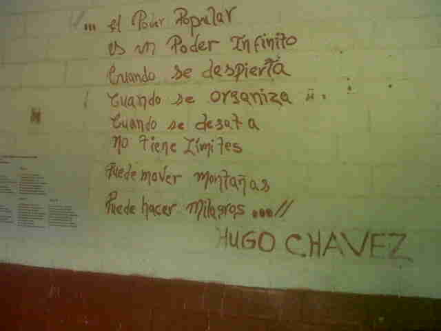
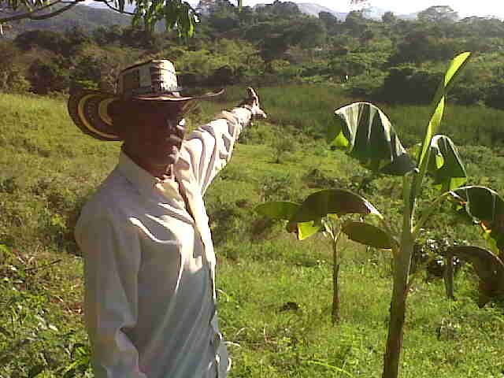
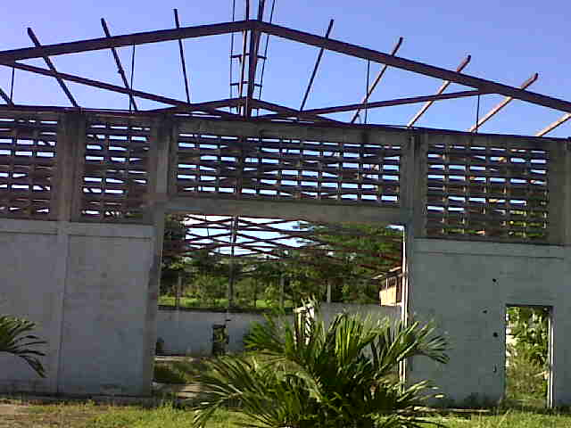

Proyectos en construcción

CENTRO TECNOLÓGICO COMUNITARIO MÓVIL
El proyecto titulado "Centro Tecnológico Comunitario", se formula con el objetivo de buscar
alternativas viables y pertinentes para formar niños, jovenes y adultos, que hacen vida en los barrios
populares de Petare, Municipio Sucre, estado Miranda, en el conocimiento y acceso a las tecnologías de
información y comunicaciones (TIC) que permita consolidar la participación ciudadana con las
comunidades en las que se hayan inmersa; potenciando procesos de formación mediante la realización
de proyectos de tipo comunitario....
Ver documento completo

SOMOS DE MAIZ
Objetivos del proyecto:
Crear un sistema empresarial donde prevalezcan las metodologías y políticas Socialistas
tanto en teoría como en práctica, y mantenerlas en el tiempo y espacio.
Crear una Red Socio-Productiva de elaboración de productos derivados del maíz, primero
para brindar apoyo y variedad de alimentos para los niños de las U.E.B. DOMINGO FAUSTINO SARMIENTO Y JOSE MANUEL
NUÑEZ PONTE, a través del programa PAE, y segundo generar la comercialización de
los mismos en todas las comunidades del entorno...
Ver documento completo

AGRICULTURA SUSTENTABLE: TECNOLOGIA DE INVERNADEROS PARA EL CULTIVO DE HORTALIZAS
La producción de cultivos bajo invernadero es una de las técnicas más modernas
que se utilizan actualmente en la producción agrícola. La ventaja del sistema de
invernadero sobre el método tradicional a cielo abierto, es que en el mismo, se establece una
barrera entre el medio ambiente externo y el cultivo. Esta barrera limita un microclima que permite
proteger el cultivo del viento, lluvia, plagas, enfermedades, hierbas y animales. ...
Ver documento completo